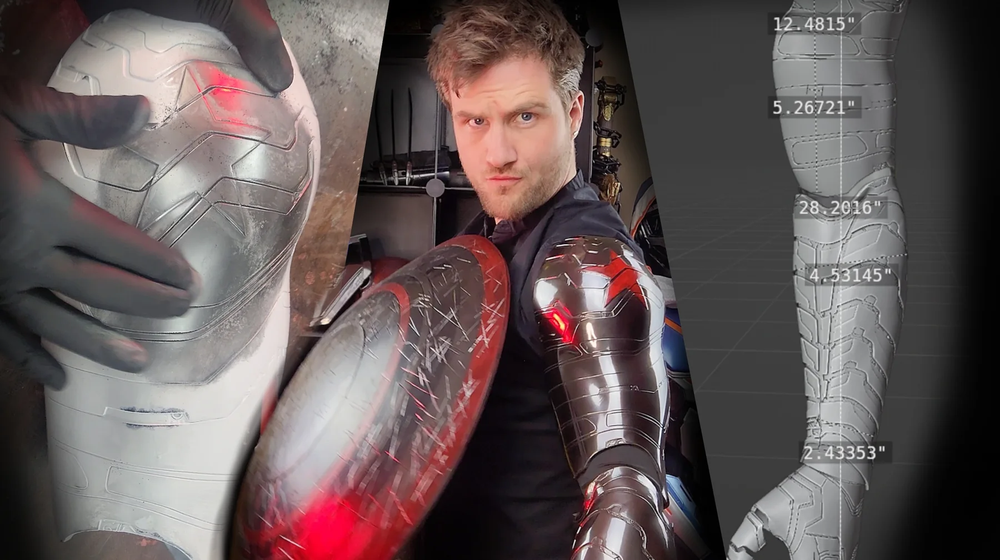
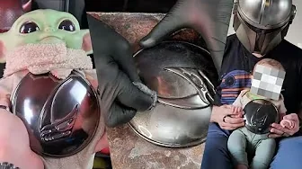
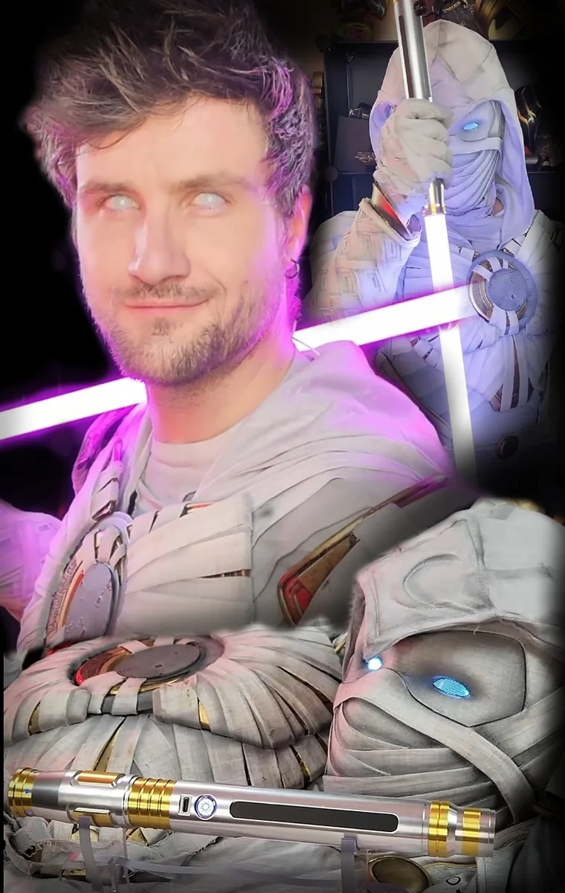

P–001
Iron Doom
A complete wearable-art build combining body scanning, digital fitting, fabrication, lighting, electronics, finishing, and performance-ready assembly.
STYLE / ART / ENGINEERING
Independent production studio / California
Prototype development
Props + specialty fabrication
Installations + experiences
Independent fan-made project. Not affiliated with or endorsed by Marvel.
001 / WHAT WE DO
DePolo Creations takes a sketch, a model, a napkin drawing, or a strange problem and works forward until there is a real object on the table.
No mystery process. No invented team. Design decisions, prototypes, wiring, sanding dust, revisions, and careful delivery—the work behind the work stays visible.
002 / SELECTED WORK
BUILT, FINISHED, TESTED
A complete wearable-art build combining body scanning, digital fitting, fabrication, lighting, electronics, finishing, and performance-ready assembly.

P–002 / LIGHT + WEARABLE
Printed armor, programmable light, power management, and a graphic finish designed as one system.

P–003 / SCALE + FABRICATION
From body measurements and digital scaling to a fitted, finished wearable object.
003 / WORK INDEX
50+
COMPLETED PROJECTS
IN THE STUDIO ARCHIVE
 03 / NEON DAREDEVILWEARABLE · LIGHTING
04 / US AGENT SHIELDFORMING · FINISHING
05 / CHROME STUDIESMATERIAL · PROCESS
03 / NEON DAREDEVILWEARABLE · LIGHTING
04 / US AGENT SHIELDFORMING · FINISHING
05 / CHROME STUDIESMATERIAL · PROCESS

06 / GRAPHITE CHROMEPRINT · SURFACE · FINISH 07 / WOLVERINEMASK · COSTUME 08 / VECNASCULPTURE · CHARACTER 09 / DAREDEVIL 2003REPLICA · FINISH
10 / SOCORRO SABERLIGHT · PERFORMANCEMORE FROM THE ARCHIVE
004 / CAPABILITIES
From model, sketch, or rough intent to a finished first physical version.
Wearables, displays, specialty pieces, promotional objects, and one-off builds.
Large pieces for events, stages, activations, and spaces—with real-world constraints considered.
3D modeling, mechanical problem solving, electronics, lighting, material and finish development.
005 / METHOD
CAD → CARDBOARD → PRINT → WIRE → SAND → PRIME → BREAK → FIX → TEST → FINISH
Failed parts, dust, tape, wiring, and revisions are not embarrassing detours. They are evidence that the object was solved—not merely rendered.
006 / STUDIO
It operates as a focused independent studio: small enough for direct communication, broad enough to move between art, engineering, electronics, and physical production.
The object can be strange. The schedule, quote, communication, and delivery should not be.
YOUTUBE / 108 VIDEOS ↗INSTAGRAM ↗007 / NEW WORK
Function, form, or both.
Send the sketch, model, reference, deadline, or half-formed idea.